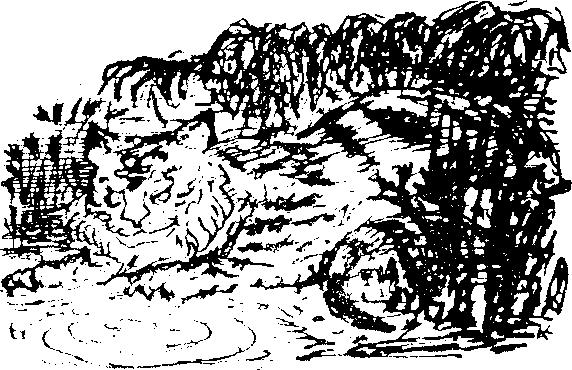
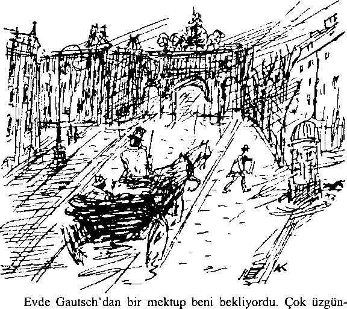
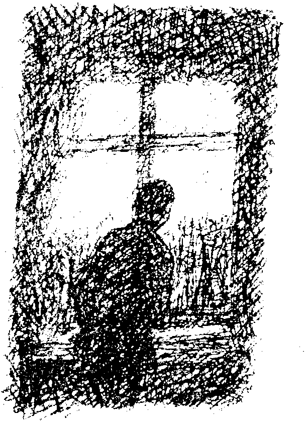

II
Sisli bir Kasım günü, öğleden sonra -o zamanlar Münih’te yaşıyorduk- uşağımız bir ziyaretçim olduğunu bildirdi.
“İçeri gelin.”
Loş ışıkta görebildiğim kadarıyla sıradan görünüşlü bir adamdı gelen. Telaşlı bir ifadeyle kendini tanıttı.
“İsmim Franz Gautsch. Sizinle konuşmak istiyorum. Bana ayıracağınız yarım saatiniz var mı?”
Vaktim olduğunu söyleyip oturmasını rica ettim, uşağa da bir lamba ve çay getirmesini söyledim.
“Size nasıl yardımcı olabilirim?” Yabancı hikâyesini anlattıkça baştaki kayıtsızlığım önce meraka, sonra giderek şaşkınlığa dönüştü.
“Size bir teklifte bulunmaya geldim,” diyerek söze başladı, “Bu teklifi kendi adıma değil, başka biri adına yapıyorum, siz bu kişinin varlığını unutmuş bile olabilirsiniz fakat kendisi sizi gayet iyi hatırlıyor. Bu adam, Avrupa standartlarına göre muazzam bir servetin sahibi. Eski sınıf arkadaşınız Claus Patera’dan söz ediyorum. Lütfen sözümü kesmeden dinleyin! Patera, talihin tuhaf bir cilvesi sayesinde belki de dünyadaki en büyük servete sahip oldu. Eski dostunuz daha sonra, kolay kolay tükenmeyecek mali kaynaklara sahip olmadan asla başarılamayacak bir tasarıyı gerçekleştirmeye koyuldu. Bir hayal alemi, rüya ülkesi kurmaya kararlıydı. Oldukça karmaşık bir konu bu, size özetleyeyim;
İlk olarak 31.000 kilometrekarelik, uygun bir arazi satın alındı. Satın alınan bölgenin üçte biri dağlıktır, kalan arazi düzlükler ve tepelerden oluşmaktadır. Bir göl, bir nehir ve geniş ormanlar bu küçük ülkeyi renklendirip manzarasını çeşitlendirir. Topraklarında köyler ve çiftlikler kurulmuştur. Köylere ve çiftliklere fazlasıyla ihtiyaç duyduk çünkü daha başlangıçta bile nüfus on iki bin kişiden oluşmaktaydı. Rüya Ülkesi’nin şu anki nüfusu altmış beş bindir.”
Ziyaretçi durakladı, çayından bir yudum aldı. Çekinerek devam etmesini söyleyip sessizliğimi kordum.
“Patera,” diye devam etti sözlerine, “her tür ilerlemeye karşı büyük bir nefret duyuyor. Daha doğrusu her tür bilimsel ilerlemeye karşı demeliyim. Bu söylediğime kelimesi kelimesine inanmanızı rica ediyorum, çünkü Rüya Ülkesi’nin kurulmasının arkasında yatan asıl neden budur. Ülkenin sınırları, topraklarımızı dış dünyadan ayıran duvarlarla çevrilidir, sağlam istihkamlarla dışarıdan gelebilecek bir saldırıya karşı korunmaktadır. Ülkeye, sadece bir kapıdan giriş, çıkış yapmak mümkündür, böylece yeni gelen insanları ve eşyaları titizlikle denetlemek de kolaylaşmaktadır. Rüya Ülkesi çağdaş uygarlığın mutsuz ettiği herkes için bir sığınak, onların her türlü günlük ihtiyacını sağlayan bir barınaktır. Ülkenin efendisinin niyeti asla gelecek için örnek bir devlet, bir ütopya yaratmak değildir. Maddi sıkıntılar yaşanmaması için gerekli önlemler alınmış olsa da, bu ülkenin en önemli amacı daha çok mülk, eşya ve nüfus kazanmak değildir. Hayır efendim kesinlikle değil!... Bana inanmıyor, gülümsüyorsunuz. Biliyorum, Patera’nın Rüya Ülkesi aracılığıyla başarmak istediklerini sadece kelimelerle anlatmak çok zor, adeta imkansız.
Bu noktada size, ülkemize kabul edilen herkesin doğuştan ya da yaşadıkları deneyimler sayesinde kazandıkları kimi özellikleri yüzünden seçilmiş olduğunu söylemem gerekiyor size. Çok keskin duyulara sahip olan kimselerin, sıradan insanlar için olağanüstü durumlar hariç asla var olmayan, bu dünyanın dışındaki olayları gördükleri bilinen bir gerçektir. İşte bu “var olmayan” şeyler, bizim çalışmalarımızın özünü oluşturmaktadır, anlıyorsunuz ya. En derin ve mükemmel anlamıyla, Rüya halkının -kendilerine böyle derler- varlığını bir an bile unutmadığı dünyanın akıl sır ermez temelini oluşturan şeylerdir bunlar. Sıradan hayat ve Rüya dünyasının taban tabana zıt olduğu söylenebilir, işte iki dünyanın arasında karşılıklı anlayışı bu kadar zor kılan da bu zıtlıktır. ‘Rüya Ülkesi’nde gerçekten neler oluyor? Orada hayat nasıldır?’ sorusuna bir yanıt veremeyeceğim. Ben size sadece yüzeysel bilgiler verebilirim, oysa Rüya halkı özünde derinlikleri arar. Her şey, hayata mümkün olan en derin manevi boyutu kazandırmak üzere düzenlenmiştir. Rüya Halkının değerleri o kadar farklıdır ki sıradan insanların sevinçleri ve üzüntüleri onlara tamamen yabancıdır, her zaman da öyle kalacaktır. Dünyamızın özüne en uygun tanım muhtemelen ‘ruh halidir’. Halkımız sadece “çeşitli ruh hallerini” tecrübe eder, daha doğrusu sadece ruh halleriyle var olurlar. Dış dünya onlar için sadece hammaddedir diyebiliriz. Dış dünyayı kendi istekleri doğrultusunda, etkileşimli bir işbirliği içinde biçimlendirirler. Doğal olarak, hammaddenin tükenmemesi için gerekli tüm önlemler alınmıştır. Fakat bütün halkın inandığı tek şey rüyadır, kendi rüyalarıdır. Bu rüyalar yetiştirilir ve geliştirilir. Onları bozmak düşünülemez bile, çok ciddi bir suç, hatta ihanet olarak kabul edilir. İşte bu da size, toplumumuzun bir parçası olmak üzere davet edilen insanların niçin titizlikle seçildiğini açıklıyor. Kısa kesip konuşmanın sonunu getirmek gerekirse”, - bunu söyledikten sonra Gautsch sigarasını söndürüp doğrudan gözlerimin içine bakmaya başladı- ‘Rüya Ülkesi ’nin mutlak yöneticisi Claus Patera, beni, yani temsilcisini, gelip ülkesinde yaşamanız için sizi davet etmekle görevlendirdi.”
Ziyaretçim bu son kelimeleri daha yüksek sesle ve son derece resmi bir tavır takınarak söylemişti. Sonra sustu, o anda, her okuyucunun tahmin edebileceği gibi ben de susuyordum. Aklını kaçırmış bir adamla karşı karşıya olduğumu düşünmeden edemiyor, tedirginliğimi saklamakta zorlanıyordum. Sanki oynuyormuş gibi yaparak masa lambasını onun uzanamayacağı bir yere taşıdım, aynı anda bir pergeli ve bir mektup açacağını –sivri, tehlikeli aletlerdi bunlar- becerikli bir dokunuşla kenara ittim.
Olan bitenler düpedüz utanç vericiydi. Adam rüya konusunu anlatmaya başlayınca bir ahbabımın muzipliğiyle karşı karşıya olabileceğimi sanmıştım. Ne yazık ki bu umudum giderek kayboldu, son on dakikadır bu durumdan nasıl kurtulabileceğimi hesaplamaktaydım. Delilerle anlaşmanın en iyi yolunun onların idée fixe’lerine inanıyormuş gibi yapmak olduğunu biliyordum fakat nasıl yapayım! İri yarı bir adam değilim, temelde çekingen, ufak tefek bir adamım. Oysa cüsseli bir adam olan Gautsch, monoklü, sarı keçi sakalı, bir bürokrata yaraşır müsamahasız ve ağırbaşlı havasıyla geçmiş karşımda oturuyordu!
O sırada kafamdan geçenler az çok buna benzer düşüncelerdi. Artık bir şeyler söylemek zorundaydım, ziyaretçim yanıt vermemi bekliyordu. Eğer en kötüsü olur da bir delilik nöbeti geçirirse, lambayı söndürüp sessizce dışarı sıvışabilirdim, ne de olsa mobilyaların yerlerini ezbere biliyordum.
“Elbette, elbette Herr Gautsch. Gitmeyi iple çekiyorum! Sadece bu daveti karımla birlikte bir daha gözden geçirmemiz gerekiyor. Sabah ilk iş size yanıtımı bildireceğim.” Teskin edici bir sesle konuşup ayağa kalktım. Fakat ziyaretçim sakin bir tavırla yerinde oturmaya devam ederek ciddi bir sesle şunları söyledi: “Durumu bütünüyle yanlış anladınız, fakat bunun nedenini anlayabiliyorum. Büyük ihtimalle söylediklerimin tek kelimesine bile inanmadınız, meğer ki gizlemek için çok uğraştığınız kaygı çok daha büyük bir şüphenin belirtisi olmasın. Sizi temin ederim ki ben de herkes kadar normal bir adamım, size anlattıklarımın her kelimesi de gerçek. Anlattıklarımın olağanüstü ve duyulmamış şeyler olduğunu kabul ediyorum, ama belki bu göstereceğim şey sizi rahatlatabilir.”
Konuşurken cebinden küçük bir paket çıkarıp masanın üzerine koydu. Paketin üzerinde adım yazıyordu. Mührü kırdım, elimde yeşilimsi, gri renkli yumuşak deriyle kaplı narin bir kutu duruyordu. İçinde birine ait, tek başına duran genç bir adamın gözalıcı bir portresi vardı. Kahverengi bukleler eşsiz klasik hatlara sahip bir yüzü çevreliyor, büyük ve olağanüstü parlak gözler resimden fırlayıp doğrudan gözlerimin içine bakıyordu. Resmin Claus Patera’ya ait olduğuna dair hiç şüphe yoktu! Yirmi yıl önceki son görüşmemizden beri eski okul arkadaşımı neredeyse hiç düşünmemiştim ama bu capcanlı portreyi görür görmez aradan geçen bütün yıllar bir anda kayboldu gitti. Zihnimde Salzburg’daki lisenin sarı badanalı koridorlarını ve beceriyle taranmış sakalının sadece bir kısmını gizleyebildiği saygıdeğer gutuyla yaşlı okul kapıcısını görüyordum. Kendimi yeniden lise öğrencileri arasında buldum, üzerinde ona hiç yakışmayan melon şapkası ve deli gömleğine benzeyen ceketiyle Claus Patera da oradaydı. Claus’u büyüten teyzesinin karmakarışık zevkinin ürünüydü bu giysiler.
Birdenbire umut ve merakla dolarak “Nereden buldun bu resmi?" diye haykırdım adama.
“Size zaten anlattım,” dedi ziyaretçim. “Neyse ki korkularınız artık kaybolmuş görünüyor,” diye ekleyerek içinde kötülükten eser olmayan sevimli bir gülümsemeyle bana karşılık verdi.
“Şüphesiz anlattıklarınızın hepsi zırvalardan ibaretti, muziplikti, şakaydı,” diye gülerek haykırdım. Artık Gautsch bana son derece normal, saygıdeğer bir şahıs gibi görünüyordu. Dikkatle düşünerek çayını karıştırıyordu. Bütün olanlar bir şaka olmalıydı, şakayı kimin yaptığını daha sonra bulacaktım. Gelişmiş hayal gücüm bana bir oyun oynamıştı, sadece bir hikâye yüzünden böyle kibar bir adamın deli olduğuna nasıl karar vermiştim? Bu olay gençlik günlerimde başıma gelmiş olsaydı güler geçerdim. Aman Tanrım, yaşlanıyordum! Artık keyfim yerine gelmişti.
“Resmin gerçek olduğunu kabul ediyorsunuz değil mi?” dedi Gautsch. “Resimdeki arkadaşınızın değişik bir yaşantısı oldu. Salzburg’daki lisede sadece birkaç yıl kaldı. On dört yaşında teyzesinin yanından kaçıp bir çingene topluluğuyla birlikte Balkanları ve Macaristan’ı dolaştı. İki yıl sonra kendisini Hamburg’da buldu. O sırada bir hayvan terbiyecisiydi, ama çingenelerden ayrılıp küçük bir ticaret gemisinde miço olarak çalışmaya başlayarak denize açıldı. Böylece Çin’e geldi. Bindiği gemi, başka gemilerle birlikte Kanton limanına demir attı, fiyatlarda fahiş bir artış olmasın diye darı ve pirinç getirmişlerdi. Kargo boşaltıldıktan sonra birkaç gün daha limanda kaldılar çünkü Avrupa’ya götürecekleri mallar -peruk ve yeni bir tür kaliteli Çin porseleni- henüz hazır değildi.
Patera bu mecburi tatili çevre bölgeleri incelemek için kullandı. Bir gün yaşlı ve soylu bir Çin hanımını boğulmaktan kurtardı. Kadıncağız taşan suların geride bıraktığı çamurlara basıp kayarak Kanton Nehri’ne dökülen bir kanala yuvarlanmıştı, eğer Patera onu kurtarmasaydı mutlaka boğulurdu. Kadının suya yuvarlandığını gören yerli halk -ki pek azı yüzme biliyordu- ellerini kollarını sallayarak çığlıklar atmaya başlamıştı fakat hiçbiri karanlık ve çamurlu sulara dalmaya cesaret edememişti. Uzman bir yüzücü olan arkadaşınız şans eseri oradan geçiyordu, suya atlamakta bir an bile tereddüt etmedi, şiddetli akıntıyla boğuştuktan sonra baygın kadını karaya çıkardı, kadın yavaş yavaş kendine gelip canlandı. Bir tahtırevanla hemen olay yerine getirilen narin, yaşlı ve gri sakallı bir adamın, dünyanın en zengin adamlarından birinin karısıydı. Adamcağız tek bir kelime bile etmeden karısının kurtarıcısını kucakladı, büyük bir kır villasına gittiler. Orada hangi konulardan söz edildi bilmiyoruz. Sadece, çocuğu olmayan bir adam olan Hi-Yong’un zavallı miçoyu evine alıp evlat edindiğini biliyoruz. Patera kendisini evlat edinen aileyi üç yıl sonra kaybetmiş. Bu üç yıl boyunca Asya’nın bilinmeyen iç bölgelerine yolculuklar yapmış. Hi-Yong ve karısı aynı gün ölmüşler. Artık muazzam servetlerinin tek varisi Patera’ymış.”
Ziyaretçimin sözünü kestim. “Sanırım şimdi Rüya Ülkesi’ni anlatmaya başlayacaksınız?” dedim, eğlenmeye başlamıştım. “Harika bir fikir şu sizin Rüya Ülkesi, eğer bir itirazınız yoksa anlattıklarınızı bir yazar arkadaşımla paylaşmak istiyorum. Eminim sevimli bir hikâye çıkacaktır bu fikirden. Sigara ister misiniz?” Ziyaretçim teklifimi kibarca geri çevirdi, derin derin iç geçirdi ve ölçülü, sakin bir ses tonuyla konuşmaya başladı: “Söylediğim gibi, bütün bunları benim uydurduğumu düşündüğünüzü biliyorum. Fakat benim görevim sizi Rüya Ülkesi’nin gerçek olduğuna ikna etmek değil, sadece işverenimin teklifini iletmek. Görevimi en azından şimdilik yerine getirdim. Eğer anlattıklarıma inanmayı reddederseniz yapabileceğim başka hiçbir şey kalmamış demektir. Bununla birlikte sizden resim için bir alındı belgesi vermenizi rica edeceğim. Yakın gelecekte size iletilecek yeni haberlerim olabilir.”
Ayağa kalkıp beni başıyla selamladı. İtiraf etmeliyim ki, sade tavırlarıyla bir düzenbaza hiç benzemiyordu, deri kese de elimdeydi. Kutuyu bir daha açtım, ilk bakışta görmediğim bir katı daha olduğunu fark ettim. Kapağın altında bir kart duruyordu, üzerine mürekkeple “Eğer istiyorsan, gel,” yazılmıştı.
Unutulmuş geçmişten çıkıp geliveren bir görüntünün düşsel parıltısı bir kere daha hafızamı kapladı. Dağınık, karmakarışık, biçimsiz, çok büyük; işte eski okul arkadaşımın el yazısı böyleydi, bir keresinde öğretmenlerden biri “umutsuz vaka” demişti bu el yazısı için. Bu üç kelimeyi yazan el kesinlikle daha becerikliydi, fakat arkadaşımın yazısı olduğuna emindim. İçimi tuhaf bir sıkıntı kaplamıştı. Resimdeki yakışıklı yüz buz gibi bakışlarını yüzüme dikmişti. Bunlar insanı her türlü tuzağa düşürebilecek birinin gözleriydi, kedi gözlerini andırıyorlardı. Keyfim yeniden kaçmıştı, tuhaf hissediyordum, kafam karışmıştı. Gautsch hâlâ ayakta durmuş bekliyordu. Heyecanımı fark etmiş olmalıydı, çünkü dikkatle beni inceliyordu.
Sessizliği bozmadık.
III
Hiç kimse mizacını inkâr edemez, eninde sonunda yaptığınız her şeyi mizacınız belirleyecektir. Benim mizacımda değişmez bir melankoli vardır, tabiatımda keyif ve mutsuzluk iç içe geçmiş gibidir. Ruh halim hep ani değişimlere gebe olmuştur. Bana annemden kalan bu manevi miras, bu bana özgü yapı, hem büyük sevinçlerin hem de büyük acıların kanyağı olmuştur. Bu aşırı duygusallığımı, daha sonra anlatacağım pek çok olaydaki tavrımı daha kolay anlayabilesiniz diye şimdiden belirtiyorum.
İtiraf etmeliyim ki, Gautsch artık bana tamamen güvenebileceğim biri gibi görünüyordu. Patera’yla bir bağlantısı olduğuna ikna olmuştum, Rüya Ülkesi hikâyesinde de bir gerçeklik payı olduğuna inanmıştım. Dünya çok büyük bir yer, ben de hayatım boyunca pek çok tuhaflığa tanık oldum. En azından Patera’nın çok zengin olduğuna inanıyordum. Rüya Ülkesi onun için bir tür uğraş olmalıydı, çok büyük çaplı ve pahalı bir hayalini gerçekleştirmişti belki de. Bir sanatçı olduğum için bu tür şeyleri hep akla yatkın bulmuşumdur. Bir duygu patlaması yaşayarak elimi Gautsch’a uzattım.
“Lütfen tuhaf davranışlarımı mazur görün, bütün anlattıklarınızı yeni yeni anlamaya başlıyorum. Anlatacağınız her şeyi ilgiyle dinleyeceğim. Eski okul arkadaşımın başına gelenleri biraz daha anlatır mısınız lütfen?” Konuşurken sandalyesini de ona doğru ittim.
Ziyaretçim oturdu ve kibarca, “Elbette, size üstünkörü anlattığım hikâyedeki boşlukları doldurayım, Rüya Ülkesi ve onun gizemli efendisini biraz daha anlatayım,” dedi.
“Dikkatle dinliyorum!”

“Patronum bundan on iki yıl önce Asya’nın merkezinde, Çin topraklarında yer alan geniş Tien Shan, Cennet Dağları bölgesindeymiş. Asıl amacı artık sadece o yörelerde yaşayan nadir hayvanları avlamakmış. Özellikle küçük, uzun tüylü bir cins olan bir İran kaplanı yakalamak istiyormuş. Bazı izler bulmuşlar, akşam olunca izleri takip etmeye başlamışlar. Buryat’lı rehberin yardımıyla kısa sürede hayvana ulaşmayı başarmışlar. Fakat onlar tek bir atış bile yapamadan köşeye sıkıştırılan canavar iki takipçisine saldırmış. Buryat’lı saldırıyı geri püskürtmeyi başarmış, fakat Patera yere yuvarlanmış. Neyse ki, rehberi zamanında müdahale ederek hayvanı tam kafasından vurmayı başarmış. Böylece Patera sadece parçalanmış bir el ile saldırıdan kurtulmuş, fakat yarası uzun süre o bölgede kalmasını gerektiriyormuş. Yara, hepsi mavi gözlü, tuhaf bir kabilenin reisi olan yaşlı bir adam tarafından tedavi edilene kadar geçmemiş. Yaklaşık yüz kişiden oluşan bu küçük kabilenin üyeleri açık renkli tenleriyle diğer kabilelerden ayrılıyormuş. Büyük Kırgız göçmenlerinin soyundan gelen Moğol kabileleriyle çevrili topraklarda yaşayan bu kabilenin dış dünyayla herhangi bir alış verişi yokmuş, komşu kabilelerle kaynaşmamışlar. O zamanlar bile tuhaf, gizemli gelenekleri olduğu söyleniyor, fakat size bunlardan söz edemem. Kesin olan şu ki kabile Patera’nın ilgisini çekmiş ve onlar da Patera’yı aralarına kabul etmişler. Giderken onları hediyelere boğmuş ve geri döneceğine söz vermiş. Kabile şefleri dönüş yolculuğu boyunca ona eşlik etmişler, ayrılırken çok üzülmüşler. Efendimiz çok etkilenmiş. Dokuz ay sonra temelli kalmak üzere dönmüş. Beraberinde yüksek mertebeli Çinliler, ayrıca bir mühendisler ve haritacılar ordusu getirmiş. Efendimizin dönüşüne çok sevinen mavi gözlü arkadaşlarının köyü . yakınında kamp kurmuşlar. Bütün bunları hâlâ Rüya Ülkesi’nde yaşayan bir mühendisten öğrendim. Sonuçta bugün Rüya Ülkesi’nin üzerinde bulunduğu yüzlerce kilometrekarelik bir alanı seçip satın almışlar. Sonrası çabucak olup bitmiş. Deneyimli ustabaşlarının gözetimindeki işçiler ordusu gece gündüz çalışmaya başlamış., Efendimiz adamları ellerinden geldiğince hızlı çalışmaları . için sürekli sıkıştırıyormuş. Efendimizin dönüşünden iki ay sonra . Avrupa’dan : ilk evler gelmeye başlamış bile, hepsi eski ve. bakımsız binalarmış. Beceriyle parçalara ayrılıp gemilerle Çin’e gönderilmişler, Rüya Ülkesi’ne varınca birleştirilip önceden hazırlanan yerlerine inşa edilmişler. Elbette, pek çok kişi kirli, isten kararmış duvarları görünce başlarını sallamış fakat altın su gibi akmış, efendimizin isteği gerçekleştirilmiş. İnşaat büyük başarıyla tamamlanmış, sadece bir yıl sonra ülkenin başkenti Pearl bugünkü görünümünü almış. O topraklarda yaşayan bütün kabileler işçilerle birlikte bölgeyi terk etmiş, sadece mavi gözlü insanların kabilesi kalmış.
Gautsch konuşmasına ara verdi.
“Fakat hâlâ anlamadığım bir şey var,” diye söze karıştım, “Patera eski evleri nasıl bir sisteme göre alıyor?”
“Korkarım bunu ben de bilmiyorum,” dedi Gautsch. “Hepsi eski evler. Hatta bir kısmı kimsenin beş para ödemeyeceği viraneler, fakat bazıları sağlam ve iyi korunmuş. Avrupa’nın her yanından getirtildiler. Efendimiz bu evleri bizzat kendisi tek tek seçti, o yüzden farklı bölgelerden toplanan bu ahşap ve taş evlerin özel bir önemi olduğunu varsayıyoruz. Yoksa bu şehri kurmak için neden milyonlar harcasın ki?”
“Bu adamın kaç parası var Tanrı aşkına?” diye sordum hayretle.
“Ah, şey, keşke bilebilseydik," dedi melankolik bir tavırla. “On senedir Patera için çalışıyorum, alım satımlar, tazminatlar, ulaşım, diğer mallar ve hizmetler için neredeyse iki yüz milyon ödedim. Dünyanın dört bir yanında benim gibi başka temsilcileri de var. Patera’nın serveti hakkında bir tahminde bulunmak bile mümkün değil.”
Hayretle iç geçirdim. “Size inanıyorum bayım, fakat anlayamıyorum. Her şey çok gizemli görünüyor. Neyse, anlatmaya devam edin. Oradaki günlük hayattan söz edin bana.”
“Size bazı şeyleri açıklamaya çalışayım. Her şeyi anlatmak imkânsız, o kadar vaktimiz yok. Ayrıca ben orada yaşamıyorum, sadece zaman zaman ziyaret ediyorum. Neleri bilmek istiyorsunuz?"
Elbette Rüya Ülkesi’nde sanatın durumunu merak ediyordum, Gautsch bildiği kadarıyla neler olup bittiğini anlattı.
“Ülkemizde özel müze binaları ya da galeriler yok. Değerli sanat eserlerini binaların içine yığmıyoruz, fakat pek çok ender ve kıymetli sanat eseri görebilirsiniz. Her şeyi “kullanıma" açtık diyebiliriz. Fakat yine de tek bir modern resim, heykel ya da başka bir sanat eseri gördüğümü hatırlamıyorum. 1860’lardan sonraya ait tek bir sanat eserimiz yok. İki yıl önce ülkeye bir kasa dolusu Hollanda resmi gönderdiğimi hatırlıyorum, aralarında iki tane de Rembrandt vardı, hâlâ Rüya Ülkesi’nde olmalılar. Patera, bir sanat koleksiyoncusundan çok, önemli bir antika toplayıcısıdır. Size anlattığım gibi, büyük bina komplekslerini satın alıyor. Fakat dahası var! İnanılmaz bir hafızaya sahip ve ülkesindeki bütün eşyaları tek tek hatırlayabiliyor. Biz temsilciler, onun emirlerine uygun olarak ne isterse satın alıyoruz. Bize sık sık listeler gönderiliyor, bu listelerde Patera’nın satın almak istediği objeler ayrıntılarıyla betimleniyor, nerede ve kime ait oldukları yazıyor. Bu mallar genellikle en yüksek fiyatlar verilerek satın alınıyor, sonra dikkatle paketlenip Pearl’ e gönderiliyor. Çok zorlu bir iş bu. Satın aldığı şeylerle ilgili yığınla bilgiyi nasıl edindiğine akıl sır erdiremiyorum. Senelerdir OTun hizmetinde çalışıyorum, artık her şeye alışmış olduğumu sanabilirsiniz fakat beni hâlâ çok şaşırtıyor. Değerli eşyaları da işe yaramaz süprüntüleri de aynı ısrarla ister. Şehirli, saygın insanları da, dağ başında yaşayan köylüleri de pek çok kere ziyaret edip bir süprüntü parçası için tavan aralarını ya da bodrumlarını altüst etmek zorunda kaldım. Çoğu zaman evini aradığım insanların istenilen eşyaya, mesela kırık bir sandalye, eski bir çakmak, bir pipo ya da bir yumurta sayacına sahip olduklarından haberleri bile yoktur. Bazen, eğer eşya çok değersiz bir şeyse, güler geçer ve bir karşılık istemeden verirler. Çoğu kez insanları aradığım eşyaya sahip olduklarına inandırmak için dil dökmem gerekir, fakat aradığımı en sonunda mutlaka bulurum. Genelde en çok parayı kurnaz köylüler koparır. Evet, işim hep başımdan aşkındır. Daha geçen hafta eski piyanolardan oluşan bir sevkiyat yaptım. Aralarında gerçekten çok yıpranmış piyanolar da vardı.”
“Ah, ben eski ıvır zıvıra bayılırım,” diye lafını kestim.
“Evet, eminim Rüya Ülkesi'nde kendinizi evinizde hissedeceksiniz. İhtiyacınız olan her şey orada var. Yiyecekler nefistir, Doğu’ya giden yolculara ikram edilen domuz yemine benzer yiyeceklere hiç benzemez. Evler çok rahattır, ayrıca her yerde neşeli dostluklar kuracağınıza hiç şüphe yok. Şehirde harika bir kafemiz bile var. İnsan daha ne ister ki?”
Duygulanarak, “Çok haklısınız,” diye haykırdım, “düzenli, sade bir yaşamdan daha iyisi yoktur. Peki ya ülke halkı, insanlar? Orada nasıl insanlarla tanışacağım?”
Temsilci boğazını temizledi, gözlük camları parladı ve konuşmaya devam etti, “Doğru. Size henüz insanlardan söz etmedim. Her yerde olduğu gibi ülkemizdeki insanlar arasında da harika karakterler var.”
“Örneğin?”
“Mesela, başlangıç olarak iyi eğitimli, saygıdeğer orta sınıfımız var, ayrıca pek çok da resmi görevlimiz. Ordumuz da var, kibar ve düzgün insanlardır, subayları sık sık göreceksiniz zaten. Sonra çok sayıda akademisyenimiz var, bu bilgili insanları da unutmamak gerek. Son olarak belirli bir sınıfa dahil edemeyeceğimiz pek çok insan var, mesela sirk çalışanları, serbest çalışan sanatçılar ve benzerleri, hepsi de her yerde rastlayabileceğiniz türden insanlar.”
“Hepsini arkadaşım, yani Efendiniz mi yönetiyor?” diyerek sözünü kestim.
“Onu çok sık görebileceğinizi sanmıyorum. Patera çok meşguldür, dünyanın yükünü sırtında taşır. Ne büyük sorumluluk! Bir düşünsenize! Elbette,” diye sözüne aceleyle devam etti, “burada bahsettiğim herkes bütünün bir parçası olan insanlardır. Bildiğim kadarıyla, Efendimiz çizimlerinizin bazılarını görüp çok etkilenmiş, sizi de bu yüzden seçmiş. Gördüğünüz gibi, orada biraz tanınıyorsunuz... Oradaki yaşamın saflığını, yaşam tarzını korumak için, daha önce de belirttiğim gibi, dış dünyadan tamamen kopmak gerekiyor. Efendimiz’in en önemli amacı da bunu sağlamaktır. Gerçekten de, şimdiye kadar, oraya ait olmayan insanları dışarıda tutmakta başarılı olduk.”
Bu fikirleri içtenlikle desteklediğimi belirttim. İçten içe, daveti kabul etmeye çoktan karar vermiştim, bu maceradan sanatsal açıdan zengin bir mahsül alacağımı düşünüyor, bir an önce yola koyulmak için can atıyordum.
İnsan kalbi ne kadar nahif, ne kadar tahmin edilemez bir şey! Rüya Ülkesi’ne gitme isteği içimde yeşermeye başladığı zaman, başımdan geçecek felaketlerle ilgili en ufak bir fikrim olsaydı daveti kabul etmez, bugün büyük ihtimalle bambaşka bir adam olurdum.
IV
Hikâyenin bu bölümünde şunu da eklemeden geçemiyeceğim bu davet sayesinde, uzun süredir kalbimde taşıdığım bir isteğe fazlasıyla yaklaştığımı hissediyordum. Uzun süredir Mısır ve Hindistan’a yolculuk etmek istiyor fakat mali sorunlar yüzünden bunu gerçekleştiremiyordum. Kısa bir süre önce karıma küçük bir miras kalmıştı, o parayla bu yolculuğu gerçekleştirmek istiyorduk. Fakat hayatta her zaman olduğu gibi, her şey hayal ettiğimizden farklı biçimde gerçekleşmeye başlamıştı. Gautsch’a bu planımızı anlattım, o da hemen benim de aklıma gelen fikri önerdi.
“Yolculuk planınızı değiştirin olsun bitsin. Hindistan yerine Rüya Ülkesi’ne gidin.”
“Peki ya eşim? Onsuz yolculuk etmek istemiyorum.”
“Zaten o da Rüya Ülkesi’ne davetli. Daha önce belirtmediysem şimdi söylüyorum.”
Yine da hâlâ bir takım kuşkularım vardı. Eşim güçlü kuvvetli bir kadın değildi, yorucu bir yolculuğu kaldıramazdı.
Patera’nın temsilcisi beni hemen rahatlattı. “Bu durum sizi yıldırmasın,” dedi. “Rüya Ülkesi halkının sağlığı çok iyidir. Pearl, Münih ile aynı enlemde yer alır fakat iklimi o kadar ılımandır ki en hasta insanlar bile kısa sürede zinde ve sağlıklı hissederler. Halkımızın büyük bir bölümü daha önce düzenli olarak hastanelere ve sanatoryumlara giden insanlardı.”
“Ah, bu çok güzel bir haber. Durum böyleyse teklifinizi kabul ediyorum,” dedim ve sevinçle Gautsch’un elini sıktım.
“Yolculuk masraflarınıza gelince,” dedi ve sözüne devam etmeden önce çabucak odaya bir göz attı, “küçük bir avansa bir itirazınız olmaz sanırım?”
Ona takılarak güldüm, “Eğer bana bin mark vermekte ısrar edecekseniz neden itiraz edeyim?”
Ben böyle deyince Patera’nın temsilcisi omuz silkti, cebinden çek defterini çıkarıp birkaç kelime yazdı ve çeki bana uzattı. Reichsbank’a ait yüzbin marklık bir çekti bu.
V
Ne zaman günlük gerçeklikten uzak, fantastik olgulardan söz edildiğini duysak içimizde küçük bir şüphe tortusu kalır. İyi bir şeydir bu! Yoksa anlatacak iyi bir hikâyesi olan herkese ya da karşımıza çıkan ilk şarlatana kolayca kanardık. Bu yüzden, gördüğümüz şeylere duyduğumuz şeylerden daha çabuk inanırız. İşte benim başıma gelen de buydu. Gautsch’a inanmaya hazırdım, fakat bana küçük bir servet gibi gelen parayı görüp de çeki elime alınca içimi tuhaf bir his kapladı. Titremeye başladım, gözlerime yaşlar doldu ve ona şöyle dedim, “Sevgili Bayım, lütfen beni bağışlayın minnettarlığımı kelimelere dökmekte zorlanıyorum. Size bu para için minnettar değilim. Hayır, minnettar olmamın nedeni kesinlikle para değil. Fakat anlamalısınız, insan bütün hayatını fantastik olayların peşinde koşarak geçirmişse ve aradığı şeyler bir gün ansızın kendiliğinden karşısına çıkarsa bu büyük bir mucize demektir. İşte ben de sizin nazik teklifiniz karşısında böyle bir ânı yaşama ayrıcalığına sahip oldum. Bu yüzden lütfen teşekkürlerimi kabul edin.” Öylesine heyecanlanmıştım ki, hislerimi ona az çok böyle anlattım. Bana öyle geldi ki, Gautsch da ciddileşmişti, duygusal kelimelerle yanıt verdi. “Bayım, ben sadece işimi yapıyorum. Sizi mutlu ettiğime çok sevindim, ama bana değil, benden daha kudretli birine, işverenime teşekkür etmelisiniz. Size bir öğüdüm daha olacak; bugün öğrendikleriniz hakkında hiç konuşmayın, bunları hiç kimseye anlatmayın. Karınız hariç, tabii. Bu kuralımıza uymazsanız başınıza neler geleceğini söyleyemem. Fakat Patera çok güçlüdür ve Rüya Ülkesi’nin bir sır olarak kalmasını ister.”
İşte şimdi faka bastın, dedim içimden. “O zaman bana Rüya Ülkesi’yle ilgili bu kadar çok şey anlatmakla biraz aceleci davranmış olmadınız mı?” diye sordum. “Teklifinize ne yanıt vereceğimi bilemezdiniz.”
“Doğru değil, beyefendi. Geleceğinizi biliyordum.”
Elimi sıkıp kapıya doğru döndü. “Geç oluyor. Yarın aynı saatte yeniden gelip yapacağınız yolculukla ilgili tüm bilgileri vereceğim. Karınızla da konuşun, ona en içten selamlarımı iletin. İyi akşamlar.”
Bunları söyleyip gitti.
Karımın alışverişten dönmesini beklediğim on dakika bana hiç bitmeyecekmiş gibi geldi. Konuşmak, olağanüstü haberleri iletmek için adeta çıldırıyordum, konuşacak birine ihtiyacım vardı. Derken karım geldi.
Sürpriz yapma isteğim boşa çıktı. Karım, bir bakışta ne kadar heyecanlı olduğumu anlamıştı. Anlattığım inanılmaz şeyleri dikkatle dinledi, fakat benimle dalga geçerek “İyi olduğuna emin misin canım?” diye sormadan edemedi.
“Elbette iyiyim, sevgilim. Başta Gautsch’un bir dolandırıcı ya da deli olduğunu sandım fakat dürüst ve cömert bir adam olduğuna yavaş yavaş ikna oldum.” Zafer dolu bir tavırla kozumu, yani çeki ortaya çıkardım. Çek, karım için de kelimelerden daha ikna ediciydi. Sabah ilk iş çekin gerçek olup olmadığını öğrenmem için ısrar etti, fakat bir süre sonra seyahat için gerekli hazırlıklar ve ayrıntıları tartışmaya başladık.
“Elbette, resim de var değil mi? Ver de bir bakayım.”
Resmin karım üzerindeki etkisi şaşırtıcıydı. Uzun süre inceledikten sonra arkasına yaslandı ve sanki kaderini kabullenmiş gibi bir iç çekişle fısıldadı, “Gerçekten de gitmek zorunda mıyız? Bu adamın görünüşünü hiç sevmedim. Neden bilmiyorum fakat görüntüsü beni çok korkuttu.”
Neredeyse ağlayacaktı.
“Neler söylüyorsun sevgilim?” dedim ve gülerek onu kucakladım. “Bu benim eski dostum Patera, hayatta karşına çıkacak en sevimli insanlardan biridir. Bütün parasını tehlikeli sanatsal girişimler için harcamak istiyorsa onu sevmek için bir nedenim daha oldu demektir.”
“Sence bu olanları biraz daha araştırman gerekmez mi?”
“Neler bulacağımı düşündüğünü bilmiyorum. Arkadaşıma gözüm kapalı kefil olurum, yarın çekin geçerli olup olmadığını da öğreneceğiz. Bence Rüya Ülkesi harika bir fikir, biz de zaten Hindistan’ a gidecektik. Zaten sen, ben ne yapmak istesem hevesimi kaçırırsın.”
Ses tonum sitem doluydu, karımın kaygılarını gidermeye çalıştım. En sonunda o da bana hak verdi, hatta gereksiz bir çıkış yaptığını bile itiraf etti.
“Eminim orayı çok seveceksin. Benim işim açısından ne kadar iyi olacağını da düşünsene... Sonra para da var, ne kadar cömertçe, değil mi?”
İkna olmuş, sakinleşmişti, hemen seyahatle ilgili ayrıntıları düşünmeye başladı. Oysa ben kendimi çoktan bir Rüya Ülkesi vatandaşı olarak görüyordum, hayalgücüme kapılmıştım... Bir resme bir çeke bakıp duruyordum, ikisini de çok sevmeye başlamıştım...
Biz uykuya dalmadan önce hava aydınlanmaya başlamıştı.
VI
Daha açılmadan bir saat önce banka kapısının önünde beklemeye başladım. Gautsch’un kâğıt parçası karşılığında üç kere sayılmış kalın bir tomar para aldım. Bu küçük servet elime geçer geçmez güvenli bir yere kilitlemek için kendimi aceleyle bir taksiye attım.

Evde Gautsch’dan bir mektup beni bekliyordu. Çok üzgünmüş, fakat bize yeniden uğrayamamış. Yeni emirler almış, acilen gitmesi gerekiyormuş. Kışın üzerinden geçeceğimiz iki denizde fırtınalar olması ihtimaline karşı bir an önce yola çıkmamızı tavsiye ediyor ve en iyi dileklerini gönderiyordu. Mektupta Rüya Ülkesi’ne giderken izleyeceğimiz yol da vardı: Münih-Constanta-Batum-Bakü-Krasnovodsk-Semerkant. Orada tren istasyonunda karşılanacaktık, geleceğinizi biliyorlar, diyordu. Patera’nın resmini gösterince bizi hemen tanıyacaklarmış.
Kaldığımız daireden ve eşyalarımızdan kurtulmaya karar vermiştik. Büyük yolculuğumuzun hazırlıkları becerikli karımın yönetiminde tıkır tıkır ilerliyordu. Ben son güne kadar çok neşeliydim, fakat eski evimizde geçirdiğimiz son gün biraz hüzünlendim. Başkaları da böyle midir bilmiyorum, fakat sevdiğim yerlere veda etmek beni her zaman çok üzmüştür. Hayatımın bundan sonra sadece anılarda yaşayacak başka bir bölümünü arkamda bırakıyordum. Pencereye doğru yürüdüm. Dışarısı karanlıktı, bütün ağaçlar sonbahar havasına bürünmüştü ve çıplaktı, şehrin gürültüsü kesilmişti. Kalbime bir ağrı saplandı, başımı kaldırıp gökyüzüne baktım. Minik yıldızlarla süslüydü. Sonra omzumda sevecen bir kolun rahatlığını hissettim.
Ertesi gün cumaydı. Akşam treniyle yola çıkacaktık, zamanımızın çoğunu istasyon yakınlarındaki bir otelde geçirdik. Constanta’ya giden Doğu Hattı’ndan alınma iki bilet cebimde duruyordu. Karşılaştığım bütün tanıdıklara veda ettim ve soranlara Hindistan’a gittiğimizi söyledim. Akşam saat dokuzda trendeki yerimizi almıştık.